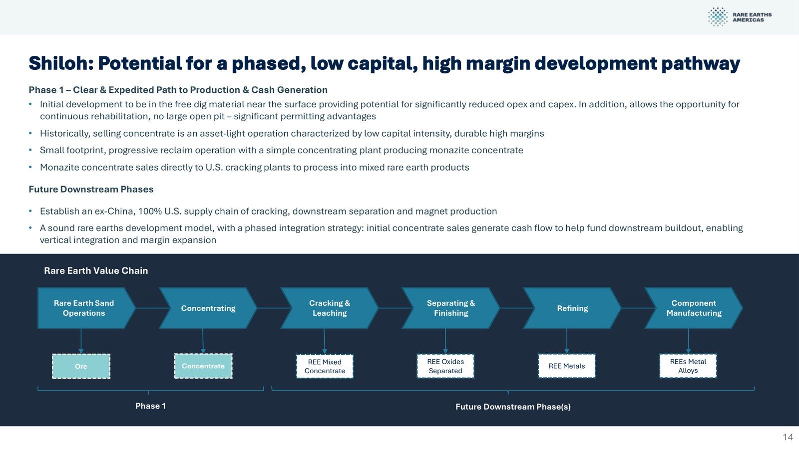
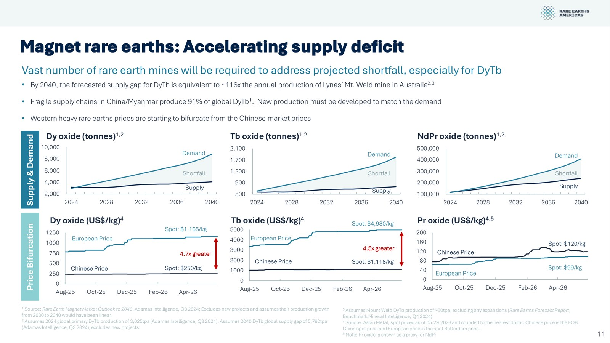
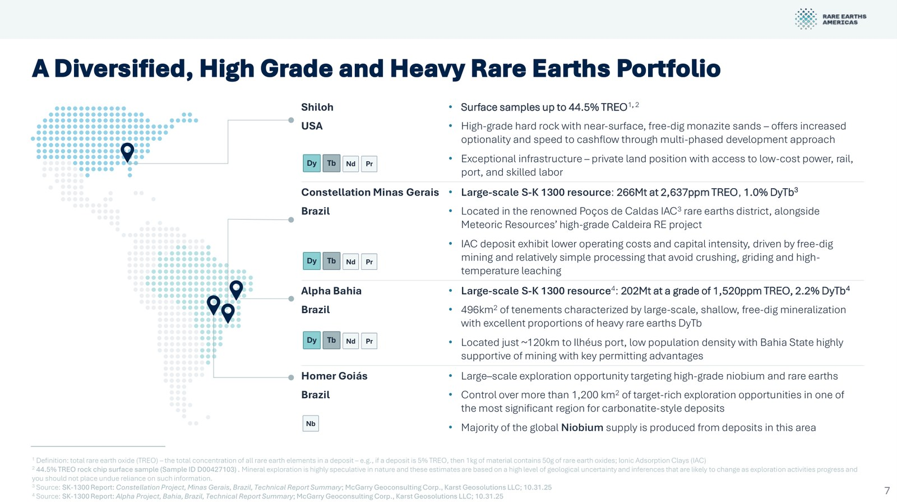

USA RARE EARTH 🇺🇸 (Nasdaq:USAR)
Model biznesowy w obrazach

Łańcuch wartości: od operacji na piaskach ziem rzadkich przez koncentrację, cracking, separację i rafinację po produkcję komponentów. Źródło: USA Rare Earth, prezentacja inwestorska (czerwiec 2026).

Narastający deficyt podaży kluczowych pierwiastków magnesowych (Dy, Tb, NdPr): prognozy popytu i podaży oraz rozjazd cen zachodnich i chińskich. Źródło: USA Rare Earth, prezentacja inwestorska (czerwiec 2026).

Zdywersyfikowany portfel wysokogatunkowych projektów ciężkich ziem rzadkich w USA i Brazylii (Shiloh, Constellation, Alpha, Homer). Źródło: USA Rare Earth, prezentacja inwestorska (czerwiec 2026).
W kontekście: Łańcuch magnesów trwałych NdFeB i SmCo
Czym jest spółka. USA Rare Earth buduje model mine-to-magnet, który ma połączyć wydobycie i separację pierwiastków ziem rzadkich, produkcję metali i stopów oraz wytwarzanie magnesów NdFeB. Łańcuch obejmuje Round Top w Teksasie, zakład Less Common Metals w Wielkiej Brytanii, planowany zakład metalurgiczny w Lacq we Francji oraz fabryki magnesów w Stillwater w Oklahomie i Blacksburgu w Karolinie Południowej. Ekspozycja na SmCo jest znacznie słabiej udokumentowana: projekt, moc produkcyjna i wolumen magnesów SmCo są NIE UJAWNIONE.
Round Top jako planowane źródło surowca. Spółka opisuje złoże jako zawierające około 72% HREE, co według zarządu należy do najwyższych koncentracji na świecie. Jednocześnie USAR nie posiada zadeklarowanych zasobów mineralnych zgodnych z wymaganiami SEC, a tonaż i zawartość rudy są NIE UJAWNIONE. Komercyjna produkcja według przyspieszonego planu górniczego ma rozpocząć się pod koniec 2028 r.
Ta kombinacja jest kluczowa: wysoki udział HREE mówi o potencjalnej strukturze przyszłej produkcji, ale bez zadeklarowanego zasobu nie stanowi jeszcze potwierdzenia wielkości ekonomicznie wydobywalnej bazy surowcowej. Round Top pozostaje projektem rozwojowym, a nie działającą kopalnią.
Metale, stopy i materiał wejściowy. Less Common Metals ma około 2 500 MTPA zdolności produkcyjnej metali i stopów REE oraz innych minerałów krytycznych. Planowany zakład w Lacq ma dodać 3 750 MTPA zdolności metalurgicznej. Blacksburg ma natomiast łączyć produkcję materiału typu strip-cast, metali i stopów o mocy 5 000 MTPA z dalszym etapem wytwarzania magnesów.
Magnesy w USA. Faza 1a zakładu Stillwater została pomyślnie uruchomiona technologicznie w Q1 2026, a rozpoczęcie produkcji komercyjnej oczekiwano w Q2 2026. Faza 1b ma przy pełnym wykorzystaniu wytwarzać około 600 MTPA spiekanych bloków NdFeB. Do 31.03.2026 r. spółka nie rozpoczęła jednak komercyjnej produkcji magnesów, a faktyczny wolumen wyprodukowanych ton jest NIE UJAWNIONY.
Planowany Blacksburg ma kosztować 1,2 mld USD, stworzyć około 490 miejsc pracy oraz osiągnąć docelową moc 6 400 MTPA magnesów NdFeB. Rozruch ma rozpocząć się w 2028 r. Nadrzędnym celem USAR jest łączna amerykańska zdolność produkcyjna 10 000 MTPA spiekanych magnesów NdFeB do 2029 r.
Znaczenie biznesowe: USAR próbuje objąć marżą i kontrolą jakości kolejne ogniwa od surowca do magnesu, ale najważniejsze amerykańskie moce wydobywcze i magnetyczne pozostają na etapie uruchamiania albo budowy.
Dla inwestora: kluczowe jest oddzielenie już działającej metalurgii LCM od przyszłych zdolności Round Top, Stillwater i Blacksburg, ponieważ moce projektowane nie są tożsame z produkcją, sprzedażą ani kwalifikacją produktu przez odbiorców.
W kontekście: Dywersyfikacja i budowa łańcucha poza Chinami
Problem, który USAR próbuje rozwiązać. Według spółki Chiny kontrolują około 99% światowego przetwarzania HREE. Oznacza to, że samo wydobycie surowca poza Chinami nie tworzy jeszcze niezależnego łańcucha: koncentrat musi zostać rozdzielony, przekształcony w metale i stopy, a następnie wykorzystany do produkcji magnesów.
Odpowiedzią USAR ma być geograficznie rozłożona sieć aktywów: Round Top jako przyszłe źródło surowca, Less Common Metals i Lacq jako zaplecze metalurgiczne oraz Stillwater i Blacksburg jako amerykańskie zakłady magnesów. W tym ujęciu LCM jest pierwszym działającym ogniwem przemysłowym, natomiast Round Top i większość planowanej mocy magnetycznej wymagają jeszcze realizacji harmonogramów inwestycyjnych.
Serra Verde jako skrót do skali surowcowej. USAR podpisał definitywną umowę przejęcia Serra Verde Group za około 2,8 mld USD. Połączenie ma według spółki stworzyć podmiot odpowiadający w 2027 r. za ponad 50% całkowitej podaży HREE spoza Chin oraz jedynego dużego producenta poza Azją obejmującego wszystkie magnetyczne Nd, Pr, Dy i Tb. Jest to prognoza zależna od zamknięcia transakcji, rozbudowy produkcji i zbudowania przetwarzania poza Chinami, a nie obecny udział rynkowy USAR.
Faza 1 Serra Verde ma docelowo osiągnąć średnią produkcję około 6 400 ton TREO rocznie w okresie eksploatacji kopalni. Przed planowanym przejęciem Serra Verde była przez USAR klasyfikowana jako konkurent wytwarzający LREE i HREE, lecz zależny od przetwarzania w Chinach. Logika transakcji polega więc również na przeniesieniu dalszych etapów tego łańcucha poza Chiny.
Polityka przemysłowa jako część modelu. USAR podpisał definitywne umowy z Departamentem Handlu USA obejmujące 277 mln USD bezpośredniego finansowania oraz 1,3 mld USD zdolności pożyczkowej w formule senior secured. Łączny dostęp do finansowania wynosi do 1,6 mld USD, lecz wypłaty mają następować transzami po osiągnięciu określonych kamieni milowych. Faktyczna kwota już wypłacona jest NIE UJAWNIONA.
Dodatkowo Texas Semiconductor Innovation Fund może zrefundować maksymalnie 14,2 mln USD kosztów Round Top. Serra Verde ma odrębny pakiet finansowania DFC w wysokości 565 mln USD. W obu przypadkach wsparcie publiczne obniża ciężar finansowania projektów, ale nie usuwa ryzyka technicznego ani warunków wypłaty.
Od 01.01.2027 r. regulacja DFARS 225.7018 ma zakazać amerykańskiemu Departamentowi Wojny zakupu magnesów NdFeB i SmCo oraz objętych przepisem materiałów, jeżeli zostały wydobyte, rafinowane, rozdzielone, przetopione lub wyprodukowane w Chinach albo innych państwach objętych ograniczeniami. Regulacja tworzy zapotrzebowanie na identyfikowalny łańcuch poza Chinami, ale jednocześnie uzależnia część przewagi USAR od trwałości polityki zakupowej państwa.
Znaczenie biznesowe: dywersyfikacja USAR nie polega wyłącznie na otwarciu kopalni, lecz na zbudowaniu kompletnej infrastruktury przetwarzania, stopów i magnesów, której brak utrzymywałby zależność od Chin mimo wydobycia poza nimi.
Dla inwestora: analitycznym testem dywersyfikacji będzie nie sama zapowiedziana moc, lecz jednoczesne uruchomienie surowca, separacji, metalurgii i kwalifikowanej produkcji magnesów przy spełnieniu kamieni milowych finansowania.
W kontekście: Mapa kluczowych graczy w łańcuchu
USAR jako integrator aktywów. Mapa przedsięwzięcia obejmuje kilka odmiennych ról:
-
Round Top - przyszłe wydobycie i przetwarzanie złoża o deklarowanym udziale około 72% HREE; rozpoczęcie produkcji komercyjnej planowane pod koniec 2028 r., lecz zasoby mineralne zgodne ze standardem SEC pozostają NIE UJAWNIONE.
-
Serra Verde - planowane źródło produkcji obejmującej Nd, Pr, Dy i Tb; przejęcie za około 2,8 mld USD ma zostać zamknięte do końca Q3 2026, przy umownej dacie granicznej 31.12.2026 r.
-
Less Common Metals - działający producent metali, stopów i materiału strip-cast o mocy około 2 500 MTPA; to z działalności LCM pochodzi obecny przychód grupy.
-
Lacq - planowana francuska zdolność produkcji metali w wysokości 3 750 MTPA.
-
Stillwater - amerykańska fabryka magnesów, której Faza 1b ma osiągnąć około 600 MTPA spiekanych bloków NdFeB.
-
Blacksburg - planowany zakład o docelowej mocy 5 000 MTPA materiałów strip-cast, metali i stopów oraz 6 400 MTPA magnesów NdFeB; rozpoczęcie rozruchu przewidziano na 2028 r.
Partnerzy przemysłowi. LCM współpracuje strategicznie z Solvay SA, dostarczającym metale REE do Permag LLC i Arnold Magnetic Technologies Corporation. Wartość, wolumen oraz minimalne zobowiązania zakupowe tej współpracy są NIE UJAWNIONE. Odbiorcy LCM obejmują zbiorczo europejskich, japońskich i północnoamerykańskich kontrahentów z sektorów obronnego, magnesów trwałych, mobilności i automatyzacji przemysłowej, lecz przypisanie konkretnych klientów do raportowanych udziałów w przychodzie pozostaje NIE UJAWNIONE.
Państwo jako finansujący i organizator popytu. Departament Handlu USA zapewnia warunkowe finansowanie projektu, DFC wspiera Serra Verde, a specjalna spółka celowa kapitalizowana przez agencje rządowe USA i kapitał prywatny ma objąć odbiór produkcji Fazy 1 Serra Verde. Państwo występuje więc równocześnie jako źródło kapitału, regulator pochodzenia materiałów oraz pośredni organizator odbioru.
Konkurenci. USAR wskazuje MP Materials Corporation, Noveon Magnetics, VACUUMSCHMELZE i KSM Metals jako konkurentów krajowych lub operujących na rynku amerykańskim. MP Materials również rozwija model mine-to-magnet, lecz bazuje na złożu LREE. Wśród podmiotów międzynarodowych spółka wymienia Lynas Rare Earths, koncentrujący się głównie na LREE i dysponujący ograniczoną produkcją HREE. Serra Verde była konkurentem przed podpisaniem umowy przejęcia. Liczbowe udziały tych przedsiębiorstw oraz porównanie ich kosztów są NIE UJAWNIONE.
Znaczenie biznesowe: USAR jest obecnie bardziej integratorem projektów, technologii, finansowania publicznego i przejmowanych aktywów niż dojrzałym producentem kontrolującym już działający łańcuch od kopalni do magnesu.
Dla inwestora: mapa graczy pokazuje, że ryzyko wykonania jest rozproszone między kopalnie, zakłady w kilku jurysdykcjach, partnerów materiałowych, finansujących publicznych i nieujawnionych klientów końcowych.
Ekspozycja na REE w liczbach
Przychód i etap komercjalizacji. Przychód FY2025 wyniósł 1 643 tys. USD, wobec 0 USD w FY2024. Procentowa dynamika r/r jest NIE UJAWNIONA i nie byłaby miarodajna przy zerowej bazie porównawczej. W Q1 2026 przychód wzrósł do 5 698 tys. USD, wobec 0 USD w Q1 2025. Całość przychodu w Q1 2026 pochodziła ze sprzedaży materiałów odlewanych i strip-cast przez LCM.
Geograficznie 16,8% przychodu Q1 2026 pochodziło z USA, a 83,2% z rynków zagranicznych. Oznacza to, że choć strategia inwestycyjna koncentruje się na budowie amerykańskiego łańcucha, obecny przychód jest generowany głównie poza USA.
pie title Geografia przychodu Q1 2026 "USA": 16.8 "Rynki zagraniczne": 83.2
Źródło: USA Rare Earth, formularz 10-Q za Q1 2026.
Produkcja i moce. Faktyczna produkcja REO, NdPr i magnesów jest NIE UJAWNIONA. Do 31.03.2026 r. USAR nie rozpoczął komercyjnej produkcji magnesów NdFeB. Ujawnione liczby dotyczą zdolności obecnych lub planowanych: około 2 500 MTPA metali i stopów w LCM, 3 750 MTPA planowanej produkcji metali w Lacq, około 600 MTPA magnesów w Fazie 1b Stillwater, 6 400 MTPA magnesów oraz 5 000 MTPA materiałów strip-cast, metali i stopów w Blacksburgu, a także łącznego amerykańskiego celu 10 000 MTPA magnesów NdFeB do 2029 r.
Wynik. Strata netto FY2025 wyniosła 298 524 tys. USD, a strata operacyjna 59 503 tys. USD. Największym wskazanym czynnikiem różnicy była niegotówkowa strata z wyceny instrumentów finansowych w wysokości 244 488 tys. USD. Strata na akcję podstawowa i rozwodniona wyniosła 3,31 USD. Bieżąca EBITDA jest NIE UJAWNIONA.
W Q1 2026 strata netto sięgnęła 68 068 tys. USD, a strata operacyjna 36 675 tys. USD. Koszty SG&A wyniosły 21 175 tys. USD, zaś nakłady R&D 14 249 tys. USD. W Q1 2025 spółka wykazała zysk netto 51 682 tys. USD, lecz wynikał on z niegotówkowej wyceny warrantów i zobowiązań earnout, przez co nie stanowi dobrego punktu odniesienia dla działalności operacyjnej.
Bilans i finansowanie rozwoju. Na 31.12.2025 r. spółka miała 359 925 tys. USD gotówki i ekwiwalentów, 694 999 tys. USD aktywów, 191 808 tys. USD zobowiązań oraz 494 286 tys. USD kapitału własnego. Na 31.03.2026 r. gotówka wzrosła do 1 749,6 mln USD, aktywa do 2 134,8 mln USD, a zobowiązania do 246,266 mln USD. Zadłużenie wynosiło 0 USD po spłacie pożyczki Barclays Trade Loan.
W Q1 2026 USAR poniósł 38 641 tys. USD wydatków capex i zaliczek na sprzęt. Dnia 28.01.2026 r. spółka zamknęła PIPE, emitując 69,8 mln akcji i pozyskując 1 500 mln USD brutto. Liczba akcji zwykłych w obiegu wzrosła z 148 055 tys. na 31.12.2025 r. do 217,976 mln na 31.03.2026 r.
Prognozowana EBITDA połączonej spółki po przejęciu Serra Verde ma według materiałów transakcyjnych osiągnąć około 1,8 mld USD do końca 2030 r. Jest to wieloletnia projekcja zależna od zamknięcia przejęcia, zwiększenia produkcji i realizacji planowanych inwestycji, a nie wynik osiągnięty przez obecną grupę.
Znaczenie biznesowe: USAR ma znaczną gotówkę i dostęp do dalszego finansowania, ale przychód pozostaje niewielki wobec strat operacyjnych oraz skali planowanych zakładów i przejęć.
Dla inwestora: wyniki należy analizować jak profil przedsiębiorstwa w fazie intensywnej budowy mocy, w którym obecny przychód LCM, niegotówkowe wyceny instrumentów i przyszłe prognozy produkcyjne opisują trzy różne poziomy dojrzałości ekonomicznej.
Kluczowe umowy - co znaczą
Finansowanie Departamentu Handlu USA. W styczniu 2026 r. USAR podpisał niewiążący list intencyjny dotyczący do 1,6 mld USD nagród i pożyczek na podstawie CHIPS Act. Była to deklaracja warunków i zamiaru dalszych negocjacji, a nie bezwarunkowe zobowiązanie do wypłaty całej kwoty.
Dnia 03.06.2026 r. spółka poinformowała o podpisaniu definitywnych umów obejmujących 277 mln USD bezpośredniego finansowania federalnego oraz 1,3 mld USD zabezpieczonej zdolności pożyczkowej, łącznie do 1,6 mld USD. Wypłaty są jednak fazowane i zależne od osiągnięcia kamieni milowych powiązanych z harmonogramem budowy. Kwota faktycznie wypłacona pozostaje NIE UJAWNIONA, więc „umowa definitywna” nie oznacza, że cała pula znajduje się już w bilansie USAR.
Przejęcie Serra Verde. Umowa przejęcia ma wartość około 2,8 mld USD. Zapłata obejmuje 300 mln USD gotówki oraz 126,849307 mln akcji USAR. Po zamknięciu dotychczasowi akcjonariusze USAR mają posiadać 65,9%, a byli akcjonariusze Serra Verde 34,1% połączonej spółki. Zamknięcie jest oczekiwane do końca Q3 2026, a data graniczna umowy przypada na 31.12.2026 r.
Zgoda akcjonariuszy Serra Verde została uzyskana 19.04.2026 r., a zgoda antymonopolowa HSR oraz wypłata 100 mln USD dodatkowej pożyczki nastąpiły 04.06.2026 r. Spełnienie tych warunków ogranicza część ryzyka transakcyjnego, lecz samo przejęcie nadal nie było zamknięte według dostarczonych dowodów.
Offtake Serra Verde. Planowana umowa odbioru ma obowiązywać przez 15 lat i obejmować 100% produkcji Fazy 1 Serra Verde, w tym Nd, Pr, Dy i Tb. Kontrahentem ma być SPV kapitalizowany przez agencje rządu USA i kapitał prywatny, a umowa ma zawierać gwarantowane ceny minimalne. Mechanizm ograniczałby ekspozycję na spadek cen objętej produkcji, ale nie eliminuje ryzyka wolumenu, kosztów ani wykonania projektu.
Istotne zastrzeżenie dotyczy statusu: umowę offtake dodano jako warunek zamknięcia transakcji Serra Verde, a jej ostateczna skuteczność pozostaje NIE UJAWNIONA. Nie należy więc traktować pełnego wolumenu jako bezwarunkowo zakontraktowanego przychodu USAR przed wejściem dokumentu w życie i zamknięciem przejęcia.
Finansowanie DFC. Serra Verde ma otrzymać pakiet finansowania DFC w wysokości 565 mln USD. Jest to finansowanie projektu, nie przychód z odbioru produktu, a jego wpływ ekonomiczny zależy od warunków uruchamiania środków i realizacji planów produkcyjnych.
Round Top i TMRC. USAR uzgodnił przejęcie 18,6% udziału Texas Mineral Resources Corporation w Round Top za implikowaną wartość około 73 mln USD, płatną 3 823 328 akcjami USAR. Zamknięcie oczekiwano nie później niż w Q3 2026, z zastrzeżeniem zwyczajowych warunków i zgody akcjonariuszy TMRC. Transakcja ma skonsolidować własność Round Top, ale wiąże się z emisją akcji i nie rozwiązuje ryzyka braku zadeklarowanego zasobu.
Umowy na magnesy z USA. Wartość i wolumen wiążących kontraktów odbioru magnesów ze Stillwater lub Blacksburga są NIE UJAWNIONE. Spółka prowadzi rozmowy handlowe i posiada memoranda of understanding, ale sama ostrzega, że mogą one nie zostać przekształcone w definitywne zamówienia. Umów take-or-pay, przedpłat klientów ani ujawnionych gwarantowanych wolumenów dla tych fabryk nie przedstawiono.
Partnerstwo LCM i Solvay. Relacja z Solvay SA obejmuje dostawy metali REE do Permag LLC i Arnold Magnetic Technologies Corporation. Wolumen, wartość, okres obowiązywania i minimalne zobowiązania zakupowe są NIE UJAWNIONE, dlatego jest to potwierdzenie relacji przemysłowej, ale nie podstawa do ilościowego modelowania przyszłych przychodów.
Znaczenie biznesowe: USAR zabezpiecza jednocześnie finansowanie budowy, własność aktywów i potencjalny odbiór produkcji, lecz każdy z tych elementów ma odmienny status prawny i inne warunki uruchomienia.
Dla inwestora: najwyższą pewność mają podpisane umowy transakcyjne i finansowe, niższą warunkowy offtake zależny od zamknięcia Serra Verde, a najniższą obecne MOU i rozmowy dotyczące magnesów produkowanych w USA.
Pozycja rynkowa i udziały
Punkt odniesienia. Chiny kontrolują około 99% globalnego przetwarzania HREE. Wielkość globalnego rynku REE i NdFeB w USD jest NIE UJAWNIONA, podobnie jak liczbowy ranking USAR przed przejęciem Serra Verde. Na 31.12.2025 r. spółka pozostawała przed rozpoczęciem produkcji wydobywczej i separacyjnej, dlatego nie posiadała potwierdzonego udziału w globalnej podaży z własnej kopalni.
Pozycja po planowanej transakcji. Po przejęciu Serra Verde połączona spółka ma według prognozy odpowiadać w 2027 r. za ponad 50% całkowitej podaży HREE spoza Chin. Definicja rynku jest tu wąska: chodzi o podaż HREE poza Chinami, a nie o cały rynek REE, cały rynek magnesów ani udział w globalnym przychodzie branży.
Faza 1 Serra Verde ma wytwarzać średnio około 6 400 ton TREO rocznie w okresie funkcjonowania kopalni. Równolegle Round Top ma rozpocząć produkcję komercyjną pod koniec 2028 r., a amerykańskie zakłady USAR mają osiągnąć łącznie 10 000 MTPA zdolności produkcji magnesów NdFeB do 2029 r. Wszystkie te wielkości są celami lub mocami planowanymi, a nie historyczną produkcją.
USAR pozycjonuje planowaną połączoną grupę jako jedynego dużego producenta poza Azją obejmującego Nd, Pr, Dy i Tb. Twierdzenie to jest deklaracją spółki opartą na przyszłej strukturze aktywów; niezależny liczbowy ranking potwierdzający tę pozycję jest NIE UJAWNIONY.
Znaczenie biznesowe: pozycja rynkowa USAR ma wynikać z koncentracji na deficytowych HREE i pionowej integracji, a nie z obecnego wolumenu sprzedaży magnesów lub wydobycia.
Dla inwestora: wskaźnik ponad 50% należy interpretować jako prognozowany udział w podaży HREE spoza Chin po przejęciu, a nie jako obecny udział USAR w globalnym rynku ziem rzadkich.
Mechanika konkurencji - na osiach
Klasa złoża. Round Top ma według spółki około 72% HREE, co odróżnia projekt od aktywów skoncentrowanych głównie na LREE, takich jak Mountain Pass MP Materials. Przewaga pozostaje jednak geologiczna i projektowa, dopóki USAR nie zadeklaruje zasobów zgodnych ze standardem SEC oraz nie potwierdzi produkcji, uzysków i ekonomiki przemysłowej.
Koszt. Liczbowe porównanie kosztu produkcji USAR z MP Materials, Lynas, Noveon, VACUUMSCHMELZE lub KSM Metals jest NIE UJAWNIONE. Nie można zatem na podstawie dowodów stwierdzić, czy przyszły materiał USAR będzie kosztowo konkurencyjny wobec podaży chińskiej albo innych dostawców zachodnich. Gwarantowane ceny minimalne w planowanym offtake Serra Verde mogą stabilizować przychód, ale nie są dowodem niskiego kosztu produkcji.
Integracja pionowa. MP Materials również realizuje strategię mine-to-magnet. USAR próbuje odróżnić się szerszą ekspozycją na HREE, metalurgią LCM oraz planowanym połączeniem Serra Verde, Round Top, Lacq, Stillwater i Blacksburga. Ta architektura może ograniczyć liczbę zewnętrznych punktów zależności, ale zwiększa zakres równoczesnego ryzyka budowlanego, technologicznego i organizacyjnego.
Zależność od Chin. Lynas jest opisywany jako producent spoza Chin skoncentrowany głównie na LREE, z ograniczoną produkcją HREE. Serra Verde produkuje LREE i HREE, ale przed przejęciem polegała na przetwarzaniu w Chinach. USAR chce tę zależność usunąć dzięki własnym i partnerskim aktywom przetwórczym. Punktem odniesienia pozostaje około 99% światowego przetwarzania HREE kontrolowanego przez Chiny.
Skala magnesów. Noveon, VACUUMSCHMELZE i KSM Metals konkurują w krajowym łańcuchu magnesów, podczas gdy docelowa amerykańska moc USAR wynosi 10 000 MTPA do 2029 r. Aktualna komercyjna produkcja magnesów USAR do 31.03.2026 r. nie rozpoczęła się, dlatego porównanie udziałów, uzysków, jakości i kosztu jednostkowego jest NIE UJAWNIONE.
Wsparcie państwa. USAR dysponuje umowami dającymi dostęp do maksymalnie 1,6 mld USD federalnego finansowania, możliwą refundacją do 14,2 mln USD dla Round Top oraz planowanym pakietem DFC 565 mln USD dla Serra Verde. Jest to przewaga w dostępie do kapitału i politycznym znaczeniu projektu, lecz środki zależne od kamieni milowych nie są równoważne z gotówką już otrzymaną.
Regulacyjna bariera dla konkurencji. DFARS 225.7018 od 01.01.2027 r. ma ograniczyć wykorzystanie chińskich magnesów i materiałów w zakupach Departamentu Wojny USA. Mechanizm może tworzyć zróżnicowanie cenowe na korzyść zgodnych dostawców, ale jednocześnie zwiększa znaczenie identyfikowalności pochodzenia każdego etapu łańcucha.
Znaczenie biznesowe: USAR konkuruje przede wszystkim potencjalną klasą surowca, integracją i dostępem do finansowania publicznego, podczas gdy koszt, jakość seryjna i niezawodność dostaw pozostają jeszcze niepotwierdzone na docelowej skali.
Dla inwestora: przewagę konkurencyjną trzeba rozdzielić na udokumentowane aktywa i umowy oraz na parametry, których nadal nie ujawniono, zwłaszcza koszt jednostkowy, uzysk, kwalifikację produktu i faktyczną produkcję.
Koncentracja odbiorców i ryzyka
Koncentracja przychodu. W Q1 2026 Klient 1 odpowiadał za 49% przychodu, Klient 2 za 16%, Klient 3 za 16%, a Klient 4 za 13%. Łącznie czterech klientów wygenerowało 94% przychodu. Ponieważ cały przychód grupy pochodził w tym okresie ze sprzedaży materiałów odlewanych i strip-cast LCM, utrata jednego z tych odbiorców uderzałaby bezpośrednio w jedyne działające źródło przychodu.
Tożsamość poszczególnych klientów i udział pojedynczego końcowego odbiorcy z sektora obronnego są NIE UJAWNIONE. Spółka opisuje bazę klientów zbiorczo, wskazując kontrahentów obronnych, producentów magnesów, firmy mobilności i automatyzacji w Europie, Japonii i Ameryce Północnej. Brak przypisania nazw ogranicza możliwość oceny jakości kredytowej i trwałości poszczególnych relacji.
Ryzyko kamieni milowych. Dostęp do 277 mln USD finansowania bezpośredniego i 1,3 mld USD zdolności pożyczkowej zależy od realizacji etapów zgodnych z harmonogramem budowy. Opóźnienie inwestycji może przesunąć wypłatę transzy, co z kolei może utrudnić finansowanie kolejnego etapu projektu. Kwota już wypłacona jest NIE UJAWNIONA.
Ryzyko przejścia od mocy do sprzedaży. USAR planuje około 600 MTPA magnesów w Fazie 1b Stillwater, 6 400 MTPA w Blacksburgu i łącznie 10 000 MTPA w USA do 2029 r., lecz faktyczna produkcja komercyjna magnesów do 31.03.2026 r. nie rozpoczęła się. Bez wiążących umów odbioru ujawnionych dla tych zakładów powstaje ryzyko rozbieżności między tempem budowy mocy, kwalifikacją produktu i tempem pozyskania klientów.
Ryzyko geologiczne Round Top. Deklarowane około 72% HREE nie zastępuje zadeklarowanego zasobu mineralnego. Ponieważ tonaż, zawartość rudy i zasoby zgodne z wymaganym standardem są NIE UJAWNIONE, nie można na podstawie dowodów ilościowo połączyć jakościowej charakterystyki złoża z przyszłym wolumenem i ekonomiczną żywotnością kopalni.
Ryzyko transakcyjne Serra Verde. Przejęcie za około 2,8 mld USD wymaga 300 mln USD gotówki i emisji 126,849307 mln akcji. Byli akcjonariusze Serra Verde mają uzyskać 34,1% połączonego podmiotu. Jeśli transakcja nie zostanie zamknięta, prognoza ponad 50% podaży HREE spoza Chin w 2027 r., produkcja Fazy 1 oraz związany z nią offtake nie staną się częścią USAR.
Ryzyko rozwodnienia. Liczba akcji zwykłych wzrosła z 148 055 tys. na 31.12.2025 r. do 217,976 mln na 31.03.2026 r. po emisji 69,8 mln akcji w PIPE. Planowane rozliczenie Serra Verde i TMRC także wykorzystuje akcje, więc finansowanie ekspansji oraz konsolidacja aktywów zwiększają liczbę udziałów, między które dzielone będą przyszłe wyniki.
Ryzyko cen REE. Spółka wskazuje cykliczność cen ziem rzadkich i zależność jej wpływu od koncentracji odbiorców w określonych sektorach końcowych. Ilościowy wpływ zmiany cen na przychód, marżę i przepływy pieniężne jest NIE UJAWNIONY. Planowane ceny minimalne w offtake Serra Verde ograniczałyby część ekspozycji, ale skuteczność tej ochrony pozostaje zależna od wejścia umowy w życie.
Ryzyko regulacyjne. Zakaz DFARS od 01.01.2027 r. może wspierać popyt i ceny dla zgodnych materiałów spoza Chin. Ten sam mechanizm działa jednak w przeciwną stronę: złagodzenie regulacji, zmiana zakresu zakupów obronnych albo problem z wykazaniem pochodzenia któregoś etapu łańcucha mogłyby zmniejszyć przewagę wynikającą ze zgodności.
Ryzyko zależności od Chin mimo dywersyfikacji. Serra Verde przed przejęciem korzystała z przetwarzania w Chinach, które kontrolują około 99% globalnego przetwarzania HREE. Dopóki USAR nie uruchomi alternatywnych zdolności separacyjnych i metalurgicznych, sama własność surowca nie usuwa wąskiego gardła dalszej obróbki.
Ryzyko kosztowe. USAR nie ujawnia liczbowego porównania kosztów z konkurentami. Jednocześnie zakład Blacksburg ma wymagać inwestycji 1,2 mld USD, a wydatki capex i zaliczki na sprzęt w Q1 2026 wyniosły 38 641 tys. USD. Bez danych o koszcie jednostkowym, uzysku i cenach sprzedaży nie można jeszcze ocenić ekonomiki planowanej skali.
Znaczenie biznesowe: główne ryzyka tworzą łańcuch zależności, w którym opóźnienie aktywa może zablokować transzę finansowania, przesunąć kwalifikację produktu, opóźnić offtake i utrzymać zależność od chińskiego przetwarzania.
Dla inwestora: najważniejsze wskaźniki kontrolne to koncentracja obecnego przychodu LCM, faktyczne wypłaty finansowania, status przejęć, rozpoczęcie produkcji komercyjnej, podpisanie wiążących umów na magnesy oraz ujawnienie kosztu i uzysku.
Słowniczek
- mine-to-magnet - model obejmujący kolejne etapy od wydobycia surowca przez separację, metale i stopy do gotowego magnesu.
- REE - pierwiastki ziem rzadkich, grupa metali wykorzystywanych między innymi w magnesach trwałych.
- NdFeB - magnes neodymowo-żelazowo-borowy o wysokiej gęstości energii magnetycznej.
- SmCo - magnes samarowo-kobaltowy, odporny na wysoką temperaturę i korozję.
- HREE - ciężkie pierwiastki ziem rzadkich, obejmujące między innymi dysproz i terb.
- LREE - lekkie pierwiastki ziem rzadkich, obejmujące między innymi neodym i prazeodym.
- zasoby mineralne - oszacowana koncentracja materiału o racjonalnych perspektywach ekonomicznego wydobycia, wykazana według określonego standardu raportowania.
- MTPA - metryczne tony zdolności produkcyjnej rocznie.
- strip-casting - szybkie odlewanie cienkich taśm stopu, wykorzystywanych jako materiał wejściowy do produkcji magnesów.
- commissioning - uruchamianie i testowanie instalacji przed regularną produkcją komercyjną.
- Nd, Pr, Dy i Tb - neodym, prazeodym, dysproz i terb, pierwiastki istotne dla właściwości magnesów trwałych.
- TREO - całkowita masa tlenków pierwiastków ziem rzadkich.
- REO - tlenki pierwiastków ziem rzadkich.
- NdPr - łączna kategoria neodymu i prazeodymu, kluczowych składników magnesów NdFeB.
- senior secured - finansowanie zabezpieczone aktywami, mające wysoki priorytet spłaty.
- DFC - U.S. International Development Finance Corporation, amerykańska instytucja finansowania rozwoju.
- DFARS - przepisy uzupełniające zasady zamówień obronnych USA.
- EPS - wynik netto przypadający na akcję.
- EBITDA - wynik przed odsetkami, podatkami, amortyzacją rzeczową i amortyzacją wartości niematerialnych.
- SG&A - koszty sprzedaży, ogólnego zarządu i administracji.
- R&D - wydatki na badania i rozwój.
- capex - nakłady inwestycyjne na aktywa trwałe i zdolności produkcyjne.
- PIPE - prywatna emisja akcji spółki publicznej dla wybranych inwestorów.
- LOI - list intencyjny opisujący planowane warunki transakcji, zwykle niewiążący w głównym zakresie ekonomicznym.
- CHIPS Act - amerykańska ustawa wspierająca krajową produkcję półprzewodników i powiązane łańcuchy materiałowe.
- offtake - umowa odbioru przyszłej produkcji na uzgodnionych warunkach.
- SPV - spółka celowa utworzona do realizacji określonej transakcji lub projektu.
- price floor - umowna cena minimalna ograniczająca ekspozycję sprzedawcy na spadek ceny produktu.
- MOU - memorandum określające zamiar współpracy, zwykle słabsze prawnie niż definitywny kontrakt.
- take-or-pay - umowa zobowiązująca klienta do odbioru produktu albo zapłaty za niewykorzystany zakontraktowany wolumen.
Źródła
- USA Rare Earth - formularz 10-K FY2025, profil, wyniki, Round Top, konkurencja i ryzyka - https://www.sec.gov/Archives/edgar/data/1970622/000197062226000021/usar-20251231.htm
- USA Rare Earth - formularz 10-Q Q1 2026, wyniki, koncentracja klientów, Stillwater i finansowanie - https://www.sec.gov/Archives/edgar/data/1970622/000197062226000038/usar-20260331.htm
- USA Rare Earth - komunikat o zakładzie Blacksburg - https://www.sec.gov/Archives/edgar/data/1970622/000121390026063832/ea029312701ex99-1.htm
- USA Rare Earth - definitywne umowy finansowania z Departamentem Handlu USA - https://www.sec.gov/Archives/edgar/data/1970622/000121390026064453/ea029340201ex99-1.htm
- USA Rare Earth - komunikat o przejęciu Serra Verde, offtake i finansowaniu DFC - https://www.sec.gov/Archives/edgar/data/1970622/000121390026045339/ea028691001ex99-1.htm
- USA Rare Earth - DEFM14A dotyczący warunków przejęcia Serra Verde - https://www.sec.gov/Archives/edgar/data/1970622/000121390026081091/ea0290028-06.htm
- USA Rare Earth - komunikat o przejęciu udziału TMRC w Round Top - https://www.sec.gov/Archives/edgar/data/1970622/000121390026023868/ea028011201ex99-1.htm